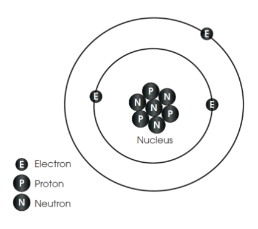
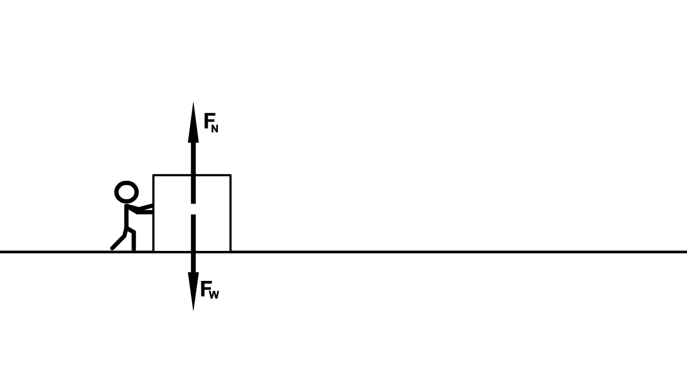

Properties of Matter
Composition of Matter
Matter is made of atoms that cannot be broken apart.
Atoms are mostly empty space, but inside atoms there are three kinds of particles:
protons and neutrons are in the nucleus of the atom
electrons are outside the nucleus.
The mass of an atom is almost all in the protons and neutrons of the nucleus.
Electrons have a very small mass
The unit of mass is the kilogram
Protons have a positive electric charge and electrons have a negative electric charge.
Neutrons have a neutral electric charge.
Two or more atoms attached together are a molecule
The connections between atoms in a molecule are calledchemical bonds
Example: a molecule of water (H2O) has two hydrogen atoms and one oxygen atom.
Volume, Mass, and Density
Forces on Matter
A force is a push or a pull
We draw a force with an arrow that shows the direction of the force.
There are two kinds of forces:
gravitational forces
electromagnetic forces
Gravity is a force on the mass of an object caused by the mass of another object.
Gravity is always a pulling force between two masses.
The gravitational force between two masses happens no matter how far away the masses are from each other.
The gravitational force gets smaller when the masses get farther apart.
On Earth the gravitational force on objects is always downward.
The electromagnetic force is caused by the pushing and pulling between the electric charges of protons and electrons in an object no matter how far apart they are.
The electromagnetic force gets smaller when the electric charges are get farther apart.
Two positive charges (protons) will push ( repel ) each other away.
Two negative charges (electrons) will push (repel) each other away.
A positive charge (proton) and a negative charge (electron) will pull ( attract ) each other.
Temperature and Matter
Temperature measures the energy of the motion of atoms and molecules in a material.
The modern metric system unit of temperature is degrees Celsius (°C) or degrees Kelvin (°K).
Degrees Kelvin (°K) = degrees Celsius (°C) + 273°.
States of Matter
Which sub-atomic particle determines what element an atom is?
What does temperature measure on the atomic or molecular level?
A high school has 3000 students and 30 students per room, how many rooms does the high school have?
Matter has three states: solid, liquid , and gas (vapor). We want to understand what determines which state matter is in.
In a material there are electromagnetic forces between molecules. These forces are called intermolecular forces.
In solids the intermolecular forces are strong , so solids cannot change their shape or volume.
In liquids the intermolecular forces are moderately strong, so liquids can change their shape but not their volume .
In gasses the intermolecular forces are weak , so gasses can change their shape and volume.
When the temperature of matter increases, the molecules move faster and the intermolecular forces are weaker .
When the temperature of a solid increases the solid becomes a liquid by melting .
When the temperature of a liquid increases the liquid becomes a gas by boiling or by evaporation.
When the temperature of a gas decreases the gas becomes a liquid by condensation .
When the temperature of a liquid decreases the liquid becomes a solid by freezing .
Solids can become gas without first becoming liquid. This is called sublimation . Dry ice is an example of sublimation.
A physical change in matter is when there is a change in the form of the matter but no chemical bonds are broken, so the molecules of the material stay the same .
Melting, evaporation, boiling, condensation, and freezing are examples of physical changes.
Adding food color to cake batter
Cutting a material into smaller pieces like slicing bread
Mixing materials like in preparing cake batter
Cracking an egg
TBD